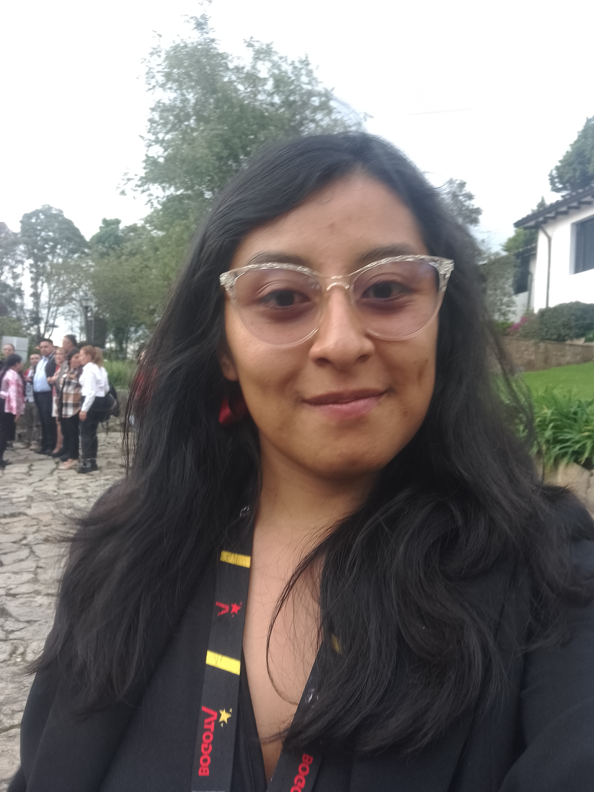

KATHERINE MONROY FUQUEN
CORREO: kmonroyf@unal.edu.co
TELÉFONO: 300 7062010
Geógrafa con experiencia laboral en Sistemas de Información Geográfica, Dinámicas Ambientales y Planificación Territorial. Manejo de geografía rural y urbana, elaboración de informes técnicos, trabajo en campo, levantamiento y análisis de información, reporte de novedades. Orientada al detalle, propositiva, con capacidad de análisis, orientación a resultados y compromiso.
¿QUÉ ESTUDIÉ?
EDUCACIÓN FORMAL
| UNIVERSIDAD | CARRERA | AÑO DE INICIO | AÑO FINAL |
|---|---|---|---|
| Universidad Distrital Francisco José de Caldas | Especialización en Sistema de Información Geográfica | 2025 | En proceso |
| Universidad Nacional de Colombia | Geografía | 2016 | 2022 |
| Gimnasio Académico Regional | Bachiller Técnico-Comercial | 2010 | 2015 |
FORMACIÓN COMPLEMENTARIA
| UNIVERSIDAD | TÍTULO DE CURSO | FECHA DE CERTIFICACIÓN | DURACIÓN |
|---|---|---|---|
| CISCO SYSTEMS COLOMBIA - UNAD | Skills for Jobs: Redes, ciberseguridad y Python | En proceso | 48 Horas |
| Instituto Geográfico Agustín Codazzi (IGAC) | Fundamentos de la Administración de Tierras | 26 de agosto del 2024 | 42 Horas |
| Vicepresidencia - UNAD | Formulación de proyectos con enfoque étnico | 28 de junio del 2024 | 42 Horas |
| Universidad Nacional de Colombia | Diplomado en Cultura política y gestión pública | 30 de junio del 2024 | 45 Horas |
| MinTIC - Universidad Distrital | Curso de Analítica de Datos | 30 de mayo del 2024 | 28 Horas |
EXPERIENCIA LABORAL
| EMPRESA | CARGO | FECHA INICIAL | Proceso |
|---|---|---|---|
| ALCALDIA LOCAL DE SUBA | ANALISTA GEORREFERENCIAL EN SOCIAL DATA | OCTUBRE DEL 2024-En proceso | Responsable del análisis y visualización de datosgeoespaciales para la toma de decisiones, aplicandotécnicas de geoprocesamiento y SIG. Implementación ymantenimiento de herramientas de geoespacialización,integración de datos en la plataforma GERSON, apoyo entemas ambientales y demás aspectos que terminaconectando dentro de la Alcaldía, facilitando informaciónclave para distintas dependencias. |
| DEPARTAMENTO ADMINISTRATIVO NACIONAL DE ESTADISTICA (DANE) | SUPERSIVOR PARA EL CENU | SEPTIEMBRE DEL 2024 - NOVIEMBRE DEL 2024 | Acompañamiento y supervisión en la recolección de datosdel Censo Económico Nacional Urbano, asegurando lacobertura y calidad de la información. Coordinación decensistas, notificación y registro de fuentes económicas,sincronización y validación de datos en campo. Resoluciónde inconsistencias mediante revisitas y correcciones.Presentación de informes y asistencia a reunionesoperativas para optimizar el proceso censal. |
| NOVOTECNI S.A.S | RECONOCEDORA CATASTRAL | OCTUBRE DEL 2023 - DICIEMBRE DEL 2023 | Consultar, actualizar, seguir y recopilar información depredios y análisis de las unidades prediales de forma digitaly física en el municipio de Girardot bajo estandarización delModelo LADM-COL.Recolectar información directa o indirecta sobre losterrenos para la Actualización del catastro de Girardot parala futura toma de decisiones en el Ordenamiento Territorialy creación de Sistema de Información Geográfica paraGirardot. |
| CINTELI COLOMBIA S.A. | TECNICO CATASTRAL | NOVIEMBRE DEL 2022- ENERO DEL 2023 | Consultar, actualizar y hacer seguimiento de predios yanálisis de las unidades prediales rurales de forma digital yfísica. Realizar apoyo de control de calidad en el manejo deinformación cartográfica, física, jurídica y tecnológica;acorde a normativas de Cali y la metodología LADM-COL |
| ASOCIACIÓN NACIONAL DE ZONAS DE RESERVAS CAMPESINAS (ANZORC) | PASANTE EN SISTEMA DE INFORMACIÓN GEOGRAFICA | MARZO DEL 2022- AGOSTO DEL 2022 | ACTUALMENTEImplementar las herramientas geográficas para las Zonasde Reservas campesinas en Colombia para proporcionar eluso del análisis de datos las Zonas de Reservascampesinas en Colombia, basado en el enfoque social ypolítica rural desde el POSPR, ETCR, PDET y Corine LandCover para evaluar las condiciones actuales de las ZRC ygenerar tomas de decisiones. |